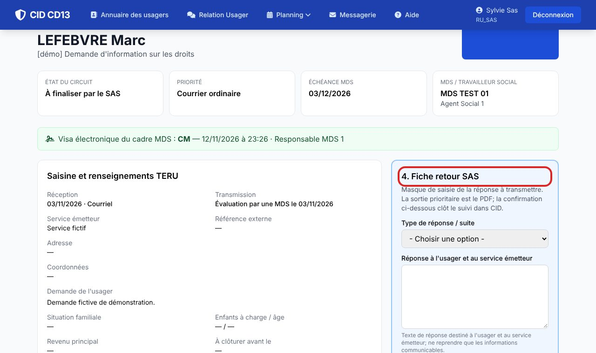
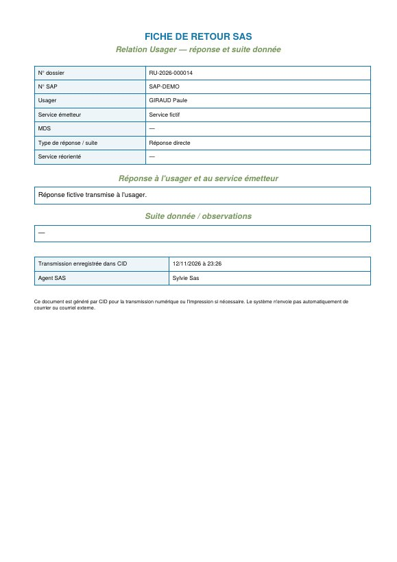
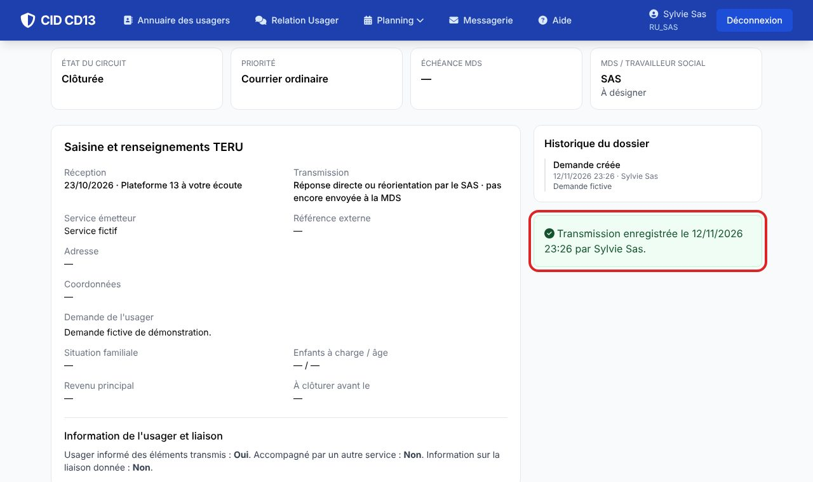

Avant de commencer
- La fiche retour se saisit après la validation du cadre, ou directement pour une réponse du SAS.
1Compléter la fiche retour

- Dans la section 4. Fiche retour SAS, choisissez le type : réponse directe, réponse après évaluation MDS, réorientation ou autre suite.
- Rédigez la réponse à l'usager et au service émetteur, en ne gardant que ce qui est communicable.
- Pour une réorientation, indiquez le service destinataire. Cochez « Usager informé » et indiquez sa date.
Une réorientation sans service destinataire est refusée par CID.
2Télécharger le PDF

- Télécharger la fiche retour PDF produit le document à transmettre. L'envoi reste fait par le service.
3Confirmer la transmission

- Confirmer l'envoi à l'usager et au service émetteur enregistre la date et votre nom, puis clôt le dossier.
Une fois confirmée, la demande est clôturée et n'est plus modifiable. CID n'envoie ni courriel ni courrier automatiquement.
Bon à savoir
- Une demande clôturée reste consultable dans la liste, avec la date de transmission et le nom de l'agent qui l'a confirmée.
Et ensuite ?
Cliquez sur une image pour l'agrandir. Le cadre rouge montre où cliquer ou quoi remplir. Toutes les données affichées sont fictives.